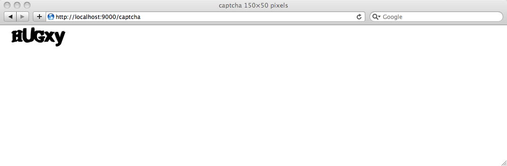
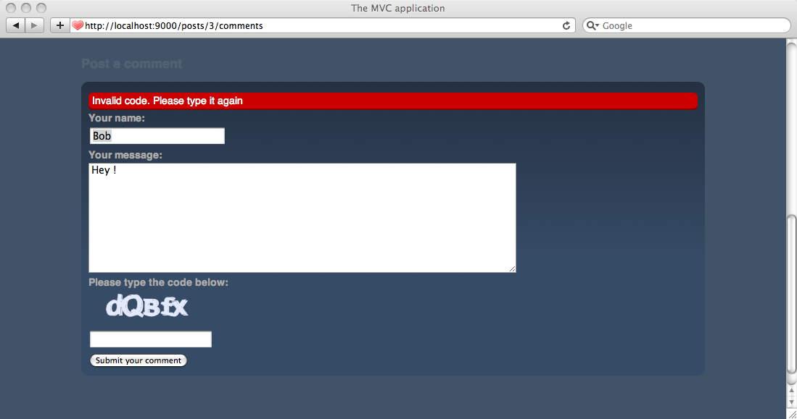

Setting up a captcha
Because anyone can post a comment to our blog engine, we should protect it a little to avoid automated spam. A simple way to protect a form from this is to add a captcha image.
Generating the captcha image
We’ll start to see how we can easily generate a captcha image using Play. Basically we will just use another action, except that it will return a binary stream instead of the HTML responses like we’ve returned so far.
Since Play is a full-stack web framework, we try to include built-in constructs for web applications’ most typical needs; generating a captcha is one of them. We can use the play.libs.Images utility to simply generate a captcha image, and then write it to the HTTP response.
As usual, we will start with a simple implementation. Add the captcha action to the Application controller:
public static void captcha() {
Images.Captcha captcha = Images.captcha();
renderBinary(captcha);
}
Note that we can pass the captcha object directly to the renderBinary() method because the Images.Captcha class implements java.io.InputStream.
Don’t forget to import play.libs.*.
Now add a new route to the /yabe/conf/routes file:
GET /captcha Application.captcha
And try the captcha action by opening http://localhost:9000/captcha.

It should generate a random text for each refresh.
How do we manage the state?
Until now it was easy, but the most complicated part is coming. To validate the captcha we need to save the random text written to the captcha image somewhere and then check it at the form submission time.
Of course we could just put the text to the user session at the image generation time and then retrieve it later. But this solution has two drawbacks:
First, the Play session is stored as a cookie. It solves a lot of problems in terms of architecture but has a lot of implications. Data written to the session cookie are signed (so the user can’t modify them) but not encrypted. If we write the captcha code to the session anybody could easily resolve it by reading the session cookie.
Second, remember that Play is a stateless framework. We want to manage things in a purely stateless way. Typically, what happens if a user simultaneously opens two different blog pages with two different captcha images? We have to track the captcha code for each form.
So to resolve the problem we need two things. We will store the captcha secret key on the server side. Because it is transient data we can easily use the Play Cache. Moreover because cached data have a limited life time it will add one more security mechanism (let’s say that a captcha code will be available for only 10mn). Then to resolve the code later we need to generate a unique ID. This unique ID will be added to each form as an hidden field and implicitly references a generated captcha code.
This way we elegantly solve our state problem.
Modify the captcha action as is:
public static void captcha(String id) {
Images.Captcha captcha = Images.captcha();
String code = captcha.getText("#E4EAFD");
Cache.set(id, code, "10mn");
renderBinary(captcha);
}
Note that the getText() method takes any color as parameter. It will use this color to draw the text.
Don’t forget to import play.cache.*.
Adding the captcha image to the comment form
Now, before displaying a comment form we will generate a unique ID. Then we will modify the HTML form to integrate a captcha image using this ID, and add the ID to another hidden field.
Let’s rewrite the Application.show action:
public static void show(Long id) {
Post post = Post.findById(id);
String randomID = Codec.UUID();
render(post, randomID);
}
And now the form in the /yable/app/views/Application/show.html template:
…
<p>
<label for="content">Your message: </label>
<textarea name="content" id="content">${params.content}</textarea>
</p>
<p>
<label for="code">Please type the code below: </label>
<img src="@{Application.captcha(randomID)}" />
<br />
<input type="text" name="code" id="code" size="18" value="" />
<input type="hidden" name="randomID" value="${randomID}" />
</p>
<p>
<input type="submit" value="Submit your comment" />
</p>
…
Good start. The comment form now has a captcha image.
Validating the captcha
Now we just have to validate the captcha. We have added the randomID as an hidden field right? So we can retrieve it in the postComment action, then retrieve the actual code from Cache and finally compare it to the submitted code.
Not that difficult. Let’s modify the postComment action.
public static void postComment(
Long postId,
@Required(message="Author is required") String author,
@Required(message="A message is required") String content,
@Required(message="Please type the code") String code,
String randomID)
{
Post post = Post.findById(postId);
validation.equals(
code, Cache.get(randomID)
).message("Invalid code. Please type it again");
if(validation.hasErrors()) {
render("Application/show.html", post, randomID);
}
post.addComment(author, content);
flash.success("Thanks for posting %s", author);
Cache.delete(randomID);
show(postId);
}
Because we now have more error messages, modify the way we display errors in the show.html template (yes we will just display the first error, it’s good enough):
..
#{ifErrors}
<p class="error">
${errors[0]}
</p>
#{/ifErrors}
…
Typically for more complex forms, error messages are not managed this way but externalized in the messages file and each error is printed inside the corresponding field.
Check that the captcha is now fully functional.

Great!
Next: Add tagging support.